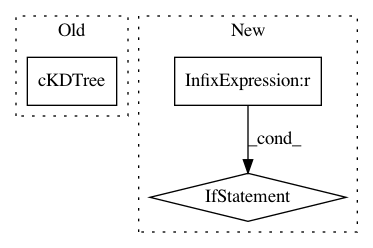

595b03eef21acae015342042bca7288bb9336463,trackpy/motion.py,,proximity,#Any#Any#,416
Before Change
>>> t_filtered = t[t["particle"].isin(particle_nos)]
leaf_size = max(1, int(np.round(np.log10(len(features)))))
tree = cKDTree(features[["x", "y"]].copy(), leaf_size)
proximity = tree.query(tree.data, 2)[0][:, 1]
result = DataFrame({"proximity": proximity})
if "particle" in features:
result.set_index(features["particle"], inplace=True)
After Change
>>> particle_nos = avg_prox[avg_prox > 20].index
>>> t_filtered = t[t["particle"].isin(particle_nos)]
if pos_columns is None:
pos_columns = ["x", "y"]
leaf_size = max(1, int(np.round(np.log10(len(features)))))
tree = cKDTree(features[pos_columns].copy(), leaf_size)
proximity = tree.query(tree.data, 2)[0][:, 1]
result = DataFrame({"proximity": proximity})
In pattern: SUPERPATTERN
Frequency: 3
Non-data size: 3
Instances
Project Name: soft-matter/trackpy
Commit Name: 595b03eef21acae015342042bca7288bb9336463
Time: 2014-11-10
Author: daniel.b.allan@gmail.com
File Name: trackpy/motion.py
Class Name:
Method Name: proximity
Project Name: soft-matter/trackpy
Commit Name: 42be11c7824427fb0a8490f3bcd635410ded57b3
Time: 2017-07-27
Author: caspervdw@gmail.com
File Name: trackpy/linking/find_link.py
Class Name: FindLinker
Method Name: get_relocate_candidates
Project Name: scikit-image/scikit-image
Commit Name: 08250ae50815b32f868041bc56a6e5a3eca4ef83
Time: 2019-12-17
Author: xwu@enthought.com
File Name: skimage/transform/hough_transform.py
Class Name:
Method Name: hough_circle_peaks